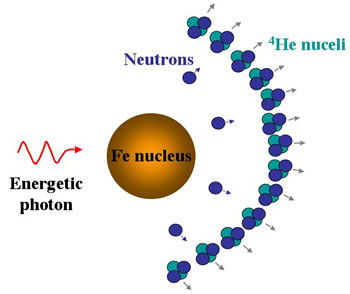

Photodisintegration in a core-collapse supernova undoes hundreds of thousands of years of nuclear fusion by splitting the iron nuclei into helium nuclei and neutrons.
Photodisintegration occurs when a high-energy photon is absorbed by an atomic nucleus. The nucleus splits to form lighter elements, releasing a neutron, proton or alpha particle in the process.
During the core-collapse of a supernova, photodisintegration undoes hundreds of thousands of years of nuclear fusion by splitting the iron nuclei into helium nuclei and neutrons.
γ + 56Fe → 134He + 4n
These helium nuclei are in turn split into protons and neutrons, the basic building blocks of elements, also through photodisintegration.
γ + 4He → 2p+ + 2n